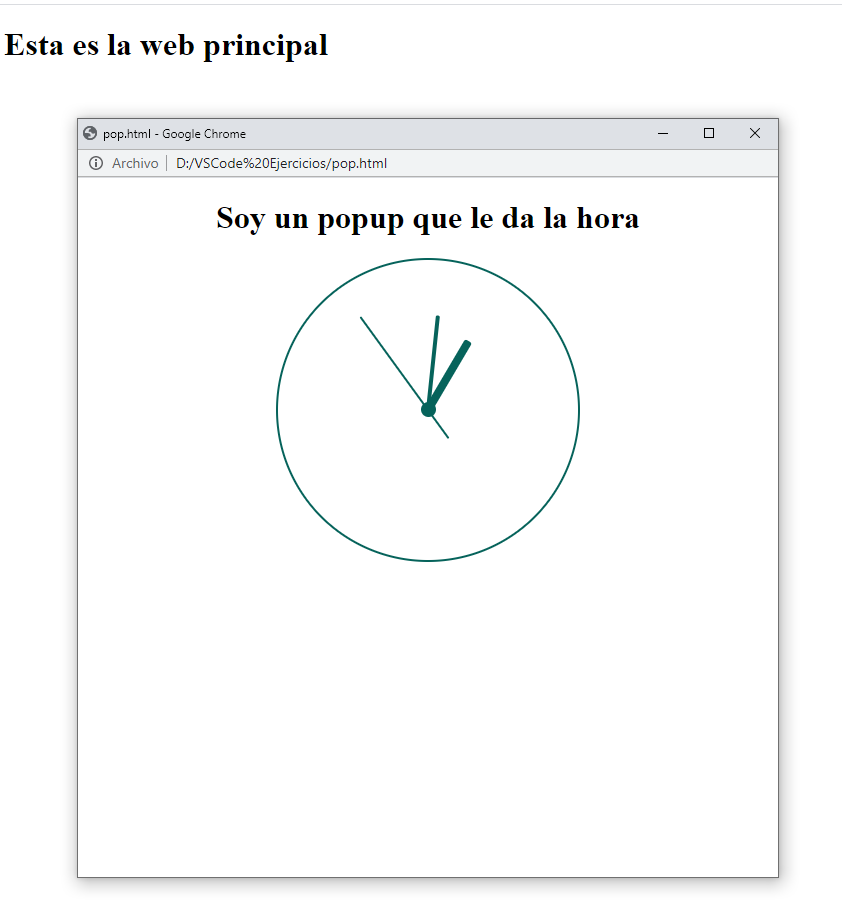

Enunciado
Debe buscar en la web efectosjavascript.com el script de un pop up que se active al ingresar a la web. Deberá pegar dicho código de pop up en un documento llamado funciones.js.
A continuación:
- Deberá buscar de nuevo en la página nombrada anteriormente el código del reloj analógico siempre visible. ✔
- Péguelo en pop.html ✔
- Además del reloj, deberá aparecer un título en la página que ponga “Soy un popup que le da la hora”. ✔
- Por último, deberá crear un documento, que será la web principal, que se llame ejercicio.html. En ella, se escribe un título que diga “Esta es la página principal”. ✔
- El pop up tendrá un tamaño de 700 * 700 px. ✔
- El reloj debe moverse. ✔
- Comprobar la página en el navegador. ✔
- Documente todo el proceso para su valoración por el tutor/a. ✔
Así es como deberá quedar:
Actividad asociada al CE3.5
Integrar scripts ya desarrollados en una página web, para añadir funcionalidades específicas de acuerdo a las especificaciones recibidas:
- Descargar el componente ya desarrollado.
- Utilizar la herramienta de edición script.
- Modificar las propiedades y los atributos de los objetos que componen el script para justarlo a las especificaciones recibidas.
- Comprobar la disponibilidad de utilización del script teniendo en cuenta los derechos de autor y la legislación vigente.
- Integrar el script a la página web previamente indicada.
- Probar la funcionalidad de la página resultado utilizando un navegador.
- Corregir los errores detectados.
- Documentar los procesos realizados.
Solución
Esta es la página principal
Actividad asociada al CE3.5
Integrar scripts ya desarrollados en una página web, para añadir funcionalidades específicas de acuerdo a las especificaciones recibidas:
- Descargar el componente ya desarrollado. ✔
- Utilizar la herramienta de edición script. ✔
- Modificar las propiedades y los atributos de los objetos que componen el script para justarlo a las especificaciones recibidas. ✔
- Comprobar la disponibilidad de utilización del script teniendo en cuenta los derechos de autor y la legislación vigente. ✔
- Integrar el script a la página web previamente indicada. ✔
- Probar la funcionalidad de la página resultado utilizando un navegador. ✔
- Corregir los errores detectados. ✔
- Documentar los procesos realizados. ✔
Copio y pego los siguientes scripts: